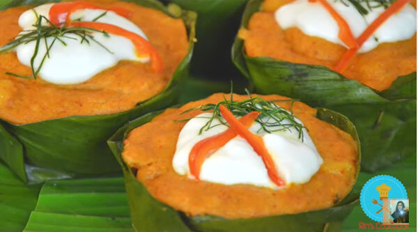
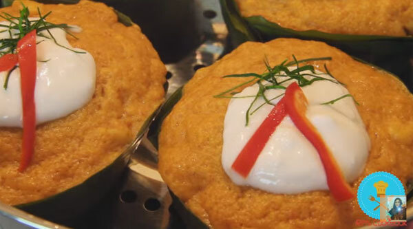

ห่อหมกปลา สูตรทำง่ายเนื้อไม่เละ เข้มข้นถึงเครื่องแกง

ส่วนผสม ห่อหมกปลา
- ห่อหมกปลา สูตรทำง่ายเนื้อไม่เละ เข้มข้นถึงเครื่องแกง
- เนื้อปลาสไลซ์ 200 กรัม
- น้ำพริกแกงเผ็ด 100 กรัม
- ไข่ไก่ 1 ฟอง
- น้ำตาลทราย 4 ช้อนโต๊ะ
- น้ำปลา 1/4 ถ้วยตวง
- กะทิ 2 ถ้วยตวง
- แป้งข้าวเจ้า 2 ช้อนชา
- กะหล่ำปลีซอย หรือผักกาดขาว
- พริกชี้ฟ้าซอย
- ใบมะกรูดหั่นฝอย
- กระทงใบตอง (กระทงใบตองแห้ง หรือถ้วย)
-
- หัวกะทิ (สำหรับตกแต่ง) 1/3 ถ้วย
-
วิธีทำห่อหมกปลา
- ต้มน้ำเปล่าให้เดือด ใส่กะหล่ำปลีหั่นฝอยลงไปให้หมดแล้วรีบตักขึ้นมาใส่น้ำเย็นด้วยความเร็ว จากนั้นหยิบกะหล่ำปลีขึ้นมาบีบน้ำออก ใส่ลงในภาชนะ เตรียมไว้
ขั้นตอนในการทำ
- ใส่น้ำพริกแกงเผ็ดลงไปในอ่างผสม ใส่ไข่ที่ตีแตกแล้วลงไป ตามด้วยน้ำตาลทราย และน้ำปลาคนให้เข้ากันจนเป็นเนื้อเดียว
- แบ่งกะทิใส่ลงไปผสมให้เข้ากัน
- ตามด้วยเนื้อปลาบด
- นวดให้เข้ากัน (นวดด้วยมือ หรือพายก็ได้ แต่ใช้มือดีกว่าจะได้สัมผัสเนื้อปลาและพริกแกงได้ดีกว่า) ค่อย ๆ เติมกะทิที่เหลือลงไปจนหมด นวดจนส่วนผสมเหนียว
- ใส่กะหล่ำปลีลวกลงไปในกระทง
- ตามด้วยใบโหระพา หยอดเนื้อห่อหมกลงไปประมาณ 1 ช้อนโต๊ะ ตามด้วยเนื้อปลาสไลซ์ และหยอดห่อหมกทับลงไปปิดท้ายจนเต็มกระทง
- นำห่อหมกใส่ที่นึ่ง เอาไปนึ่งบนน้ำเดือดพล่าน ใช้ไฟกลางสูงประมาณ 20 นาที
- นำหัวกะทิผสมแป้งข้าวเจ้า คนให้เข้ากัน หรือนำไปเข้าไมโครเวฟประมาณ 40 วินาที แต่พอครบ 20 วินาทีออกมาคนก่อนหนึ่งครั้ง หรือจะเอาไปนึ่งก็ได้ค่ะ
- เมื่อห่อหมกครบเวลา 20 นาทีแล้ว หยอดหัวกะทิลงไปในหน้าห่อหมก ตกแต่งด้วยใบมะกรูดหั่นฝอย แล้วนำไปนึ่งต่ออีก 5 นาที ตักออกมาใส่ภาชนะ พร้อมเสิร์ฟ
เคล็ดลับ
เคล็ดลับ : สาเหตุที่ต้องบีบน้ำออกเพราะเวลาใส่เนื้อห่อหมกลงไปนึ่งจนสุก ผักจะได้ไม่ยุบตัวลง ห่อหมกจะได้ไม่ยุบตัวตาม และจะได้ไม่มีน้ำซึมออกมาจากผักทำให้ห่อหมกเละ
